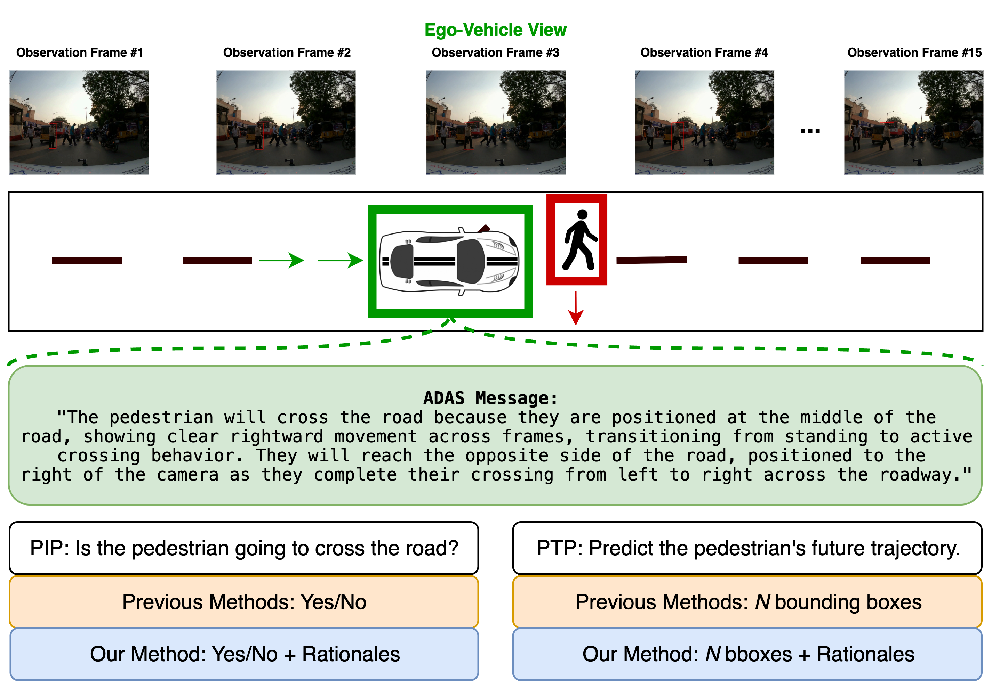
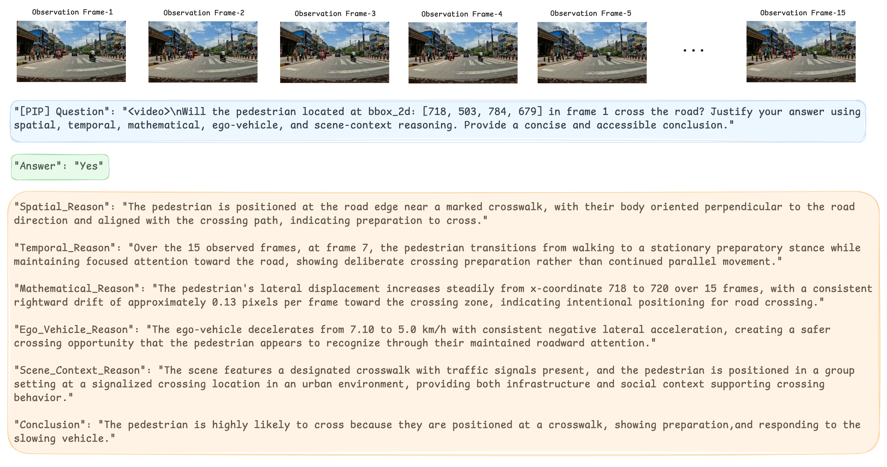
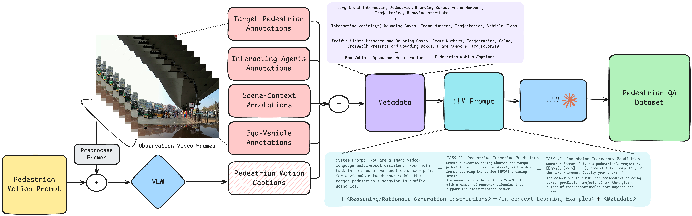
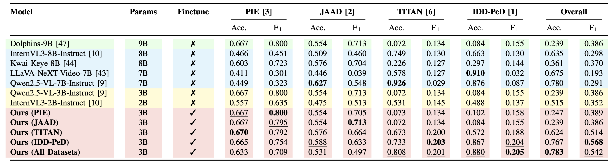
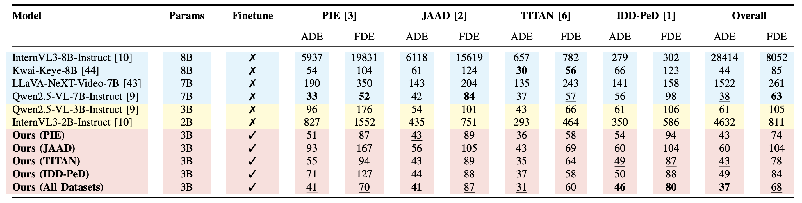
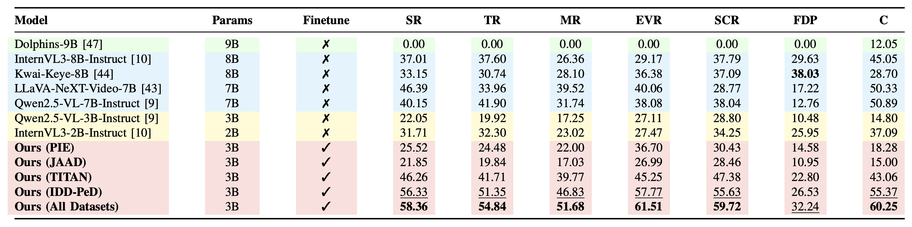

Intention Prediction
Binary classification of whether a target pedestrian will cross the road, justified with multi-aspect reasoning rather than a black-box label.
A Benchmark for Vision-Language Models on Pedestrian Intention and Trajectory Prediction

Abstract
Pedestrian intention and trajectory prediction are critical for the safe deployment of autonomous driving systems, directly influencing navigation decisions in complex traffic environments. Recent advances in large vision–language models offer a powerful new paradigm for these tasks by combining high-capacity visual understanding with flexible natural-language reasoning.
We introduce PedestrianQA, a large-scale video-based dataset that formulates pedestrian intention and trajectory prediction as question–answering tasks augmented with structured rationales. PedestrianQA expresses richly annotated pedestrian sequences in natural language, enabling VLMs to learn from visual dynamics, contextual cues, and interactions among traffic agents while generating concise explanations of their predictions — without needing specialized architectures tailored for each task.
Empirical evaluations across PIE, JAAD, TITAN, and IDD-PeD show that finetuning state-of-the-art VLMs on PedestrianQA significantly improves intention classification, trajectory forecasting, and the quality of explanatory rationales — demonstrating the strong potential of VLMs as a unified, explainable framework for safety-critical pedestrian behavior modeling.
At a glance
Binary classification of whether a target pedestrian will cross the road, justified with multi-aspect reasoning rather than a black-box label.
Future bounding-box prediction in image coordinates with paired rationales explaining the predicted spatio-temporal path.
Spatial, temporal, mathematical, ego-vehicle, and scene-context explanations — plus a final destination prediction and a plain-language conclusion.
Bridges PIE, JAAD, TITAN, and unstructured IDD-PeD into a single QA schema — enabling cross-dataset generalization and rich evaluation.
PedestrianQA Dataset
Each pedestrian sequence pairs a short observation video with a question, a binary or trajectory answer, and structured rationales spanning spatial, temporal, mathematical, ego-vehicle, and scene-context reasoning — followed by a final destination prediction and a concise conclusion.

Pose, body orientation, and physical placement (e.g., on the curb, in a lane, perpendicular to the road).
How motion evolves over the observation window — acceleration, deceleration, stops, frame-indexed transitions.
Quantitative cues: pedestrian–vehicle distance, displacement, velocity estimates, and trajectory angles.
Braking, decelerating, or yielding behavior of the ego-vehicle that enables or discourages crossing.
Traffic lights, crosswalks, road infrastructure, illumination, and interactions with surrounding agents.
Predicted endpoint within the scene — opposite curb, mid-road stop, or continuing along the same side.
Generation Pipeline
The pipeline aggregates human-annotated ground truth across constituent datasets into a unified metadata schema, enriches each sequence with fine-grained pedestrian motion captions from a VLM, and feeds a structured instruction package — including a compliance checklist and in-context exemplars — to claude-sonnet-4 for question–answer–rationale generation.

Aggregate target/interacting pedestrian boxes, vehicle trajectories, scene objects, and ego telemetry into a unified TSV schema.
Crop each frame around the target, overlay a red box, and prompt a VLM with 13 motion-specific questions for fine-grained captions.
System prompt + task definitions + rationale instructions + in-context exemplars + compliance checklist + metadata → Q–A–rationales.
Rationales must integrate cues from all annotation sources without parroting raw attributes — non-compliant outputs are regenerated.
Baseline
We finetune Qwen2.5-VL-3B-Instruct on PedestrianQA using LoRA adapters (rank=8, α=16). Both PIP and PTP are formulated as Q–A pairs — no architectural changes required. The same model handles intention prediction, trajectory forecasting, and rationale generation, jointly trained across all four source datasets.
Results
Finetuned Ours (All Datasets) outperforms zero-shot baselines including the much larger Qwen2.5-VL-7B, InternVL3-8B, Kwai-Keye-8B, and LLaVA-NeXT-Video-7B — across PIP, PTP, and rationale quality.
Binary crossing classification. Accuracy and F1 across PIE, JAAD, TITAN, IDD-PeD, and combined.

ADE and FDE in image-coordinate pixels. Lower is better.

SR · TR · MR · EVR · SCR · FDP · C. Scores in [0–100]; higher is better.

overall PIP accuracy vs. base Qwen2.5-VL-3B-Instruct (zero-shot).
ego-vehicle reasoning quality vs. Qwen2.5-VL-7B-Instruct.
Finetuning on unstructured-only data nearly matches all-dataset training.
Access
The PedestrianQA repository ships CSV indexes and Q–A annotations. Raw source videos are not redistributed — acquire all required licenses from the original source datasets before downloading them.
Citation
If you use PedestrianQA in your research, please cite our paper.
@inproceedings{mishra2026pedestrianqa,
title = {PedestrianQA: A Benchmark for Vision-Language Models
on Pedestrian Intention and Trajectory Prediction},
author = {Mishra, Naman and Gangisetty, Shankar and Jawahar, C. V.},
booktitle = {Proceedings of the IEEE International Conference on
Robotics and Automation (ICRA)},
year = {2026},
url = {https://github.com/botmahn/PedestrianQA}
}Acknowledgment
This project was supported by iHub-Data and Mobility at IIIT Hyderabad.